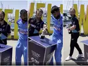

Kane Williamson and Hardik Pandya were busy with media activities in Wellington on Wednesday ahead of the first T20I.
India's white-ball tour of New Zealand starts on Friday. The two captains, Kane Williamson for the hosts and Hardik Pandya for the visitors, got themselves clicked with the trophy for the T20I series and interacted with the media in Wellington ahead of the first match, which will be hosted in the city, on Wednesday.
A hilarious moment ensued during the captains' photo shoot with the trophy, a video of which New Zealand Cricket later tweeted. In the video, Pandya can be seen adjusting his shirt with Williamson standing beside with the trophy on a stand just in front of them. The heavy gusts from at the harbour suddenly began to blow the podium over and the two players stopped it from falling over.